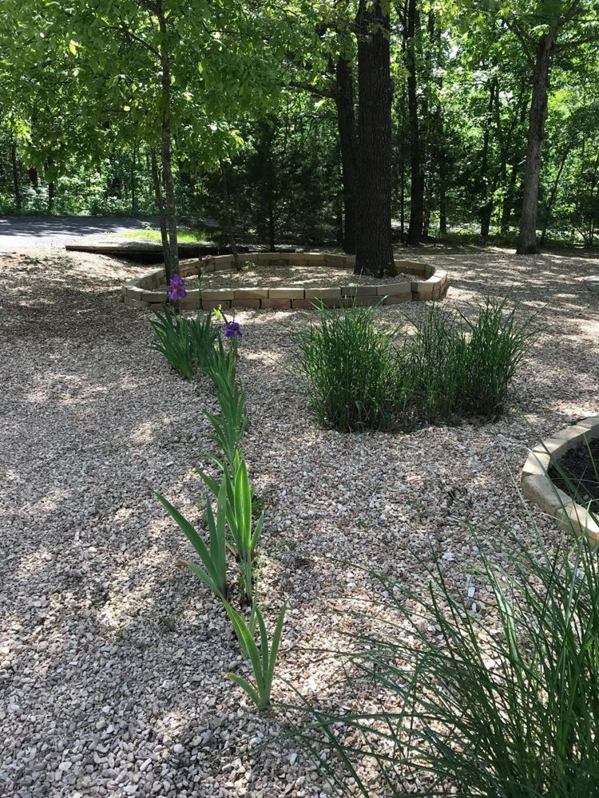
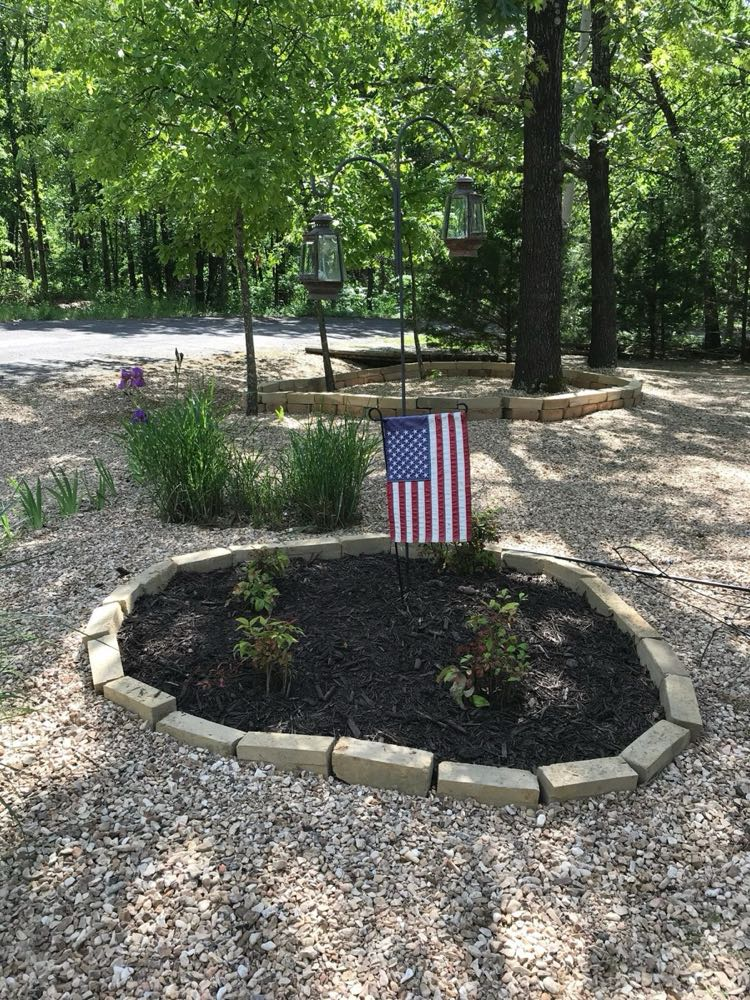

We at AECT have few supporters more dedicated to our cause than my wife Melissa's grandad, Pa. He was there giving me encouragement three years ago when I was laying the 5,000th thirty-six pound CEB (with 5,000 blocks still to go) on our new manufacturing facility. He was there alongside us last year laying 18-pound blocks on our 1,000 square foot CEB home build.
He wouldn't leave San Antonio that day without buying as many CEBs from us as his small truck could hold...about 40 eighteen-pound (6" x 12") blocks, as it turns out. He would eventually use them as a garden border at his house in Bella Vista, Arkansas...but not before taking a couple of them to his monthly Kiwanis Club meeting to show off what his granddaughter's husband was making in San Antonio, Texas.
If I had to guess, I think he respects the getting-back-to-basics part of CEB construction...as well as the hard work that it takes. As a prior U.S. Marine and veteran of the Battle of Chosin Reservoir, he understands hardship and sacrifice better than just about anybody. If you don't know, the Battle of Chosin Reservoir was a 17-day Korean War battle that took place in November-December of 1950. The battle took place in the freezing, rugged mountains of North Korea...temperatures got as low as -36 degrees (F). The participants of that battle are known as the "Chosin Few". Pa got frost-bite in his feet during the battle and still suffers from it 70 years later. Despite all the benefits of building with CEBs, to most people, lifting 360,000 pounds worth of building material into place, one block at a time, seems like too much effort...but to Pa, it doesn't seem so daunting.
Because we were making blocks only 250 miles away (better than 650 miles to San Antonio) from Pa's home last week, he and Melissa's mom, Becky, didn't miss a chance to drive the five hours to Boswell, Oklahoma to max out the truck again...27 thirty-six-pound (10" x 14") freshly made CEBs...so that they could finish their garden border.

And at 89 years old, Pa is still getting it done. Here's a video of him cutting the 10" x 14" x 3.5" cement-stabilized CEBs into thirds for his garden border.
We're loving the support and encouragement Pa is giving us, we're loving the hard work he's putting into his CEB projects, and we love how his CEB garden border turned out. If we just get him a bigger truck, there's no telling what he can build next with CEBs :) Thanks for all that you do, Pa!

